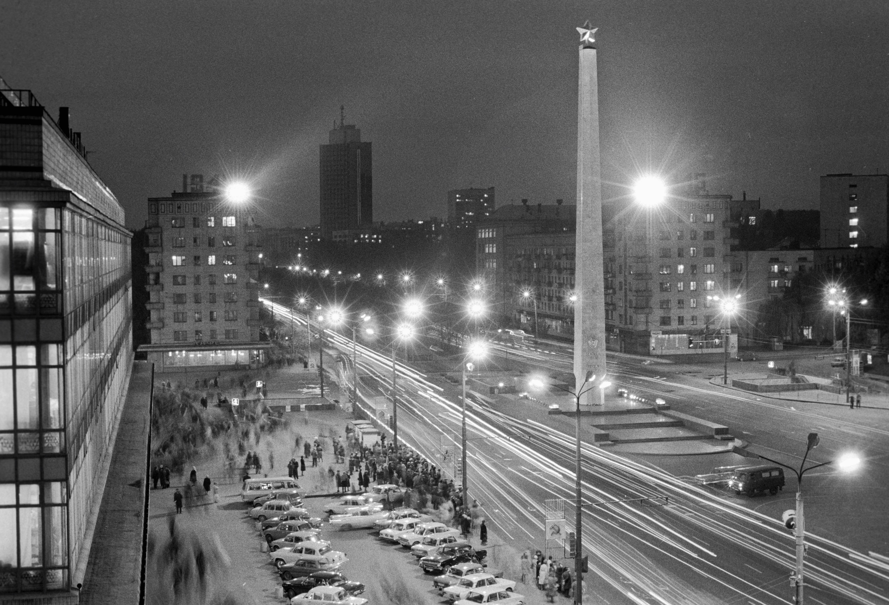

Кіеў — горад герой!
Раптоўны ўдар з паветра па Кіеве нямецкія войскі нанеслі 22 чэрвеня 1941 г. — у самыя першыя гадзіны вайны. 6 ліпеня быў
створаны Камітэт па абароне горада. З гэтага дня пачалася гераічная барацьба за Кіеў, якая працягвалася 72 дні.

Абаранялі Кіеў не толькі савецкія салдаты, але і жыхары горада. Вялікі ўклад у абарону ўнеслі атрады народнага
апалчэння, якіх да пачатку ліпеня налічвалася 19. З ліку гараджан было сфарміравана 13 знішчальных батальёнаў. У абароне
Кіева прыняло ўдзел 33 тыс. Кіяўлян. У тыя цяжкія ліпеньскія дні гараджане пабудавалі больш за 1400 дотаў, ўручную
вырылі 55 км процітанкавых равоў.
160 ТЫС.
кіяўлян і жыхароў прылеглых вёсак працавалі над стварэннем барыкад
200 ТЫС.
чалавек было мабілізавана 23 чэрвеня 1941 года

У 1965 году Кіеву прысвоена званне горада-героя. На плошчы Перамогі 8 мая 1982 года быў усталяваны абеліск у выглядзе
40-метровага абліцаванага белым мармурам і увенчанага пазалочанай зоркай пілона. На пілоне адчаканены надпіс:
«Гораду-герою Кіеву».